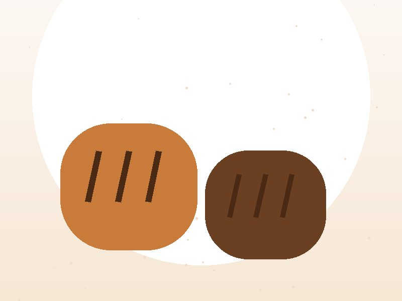

Our Mission
Our mission is to provide fresh, high-quality baked products while delivering friendly, reliable and convenient customer service.
A local bakery in Pretoria serving individuals, families and businesses.
Urban Crumb Bakery is a local bakery based in Pretoria, Gauteng. The bakery provides freshly prepared breads, pastries, cakes and catering products to individuals, families and businesses.
Urban Crumb Bakery was established with the goal of bringing quality baked products and friendly customer service to the local community. The bakery focuses on combining traditional baking with modern customer service to provide convenient products for everyday customers and special events.

Our mission is to provide fresh, high-quality baked products while delivering friendly, reliable and convenient customer service.
Our vision is to become a trusted local bakery known for quality products, creativity and strong community relationships.
Our bakers start before sunrise, shaping loaves and laminating croissant dough so the first customers at 07:00 are served fresh bread.
Lunchtime brings pastry platters and breakfast boxes out for catering delivery across Pretoria, plus the second bake of the day.
Afternoons are for cake decorating. Custom orders are finished, boxed and ready for collection before closing time.